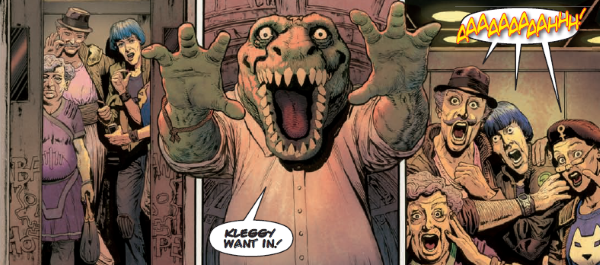

The Kleggs are one-note foils - an aggressive species bred to war - Klingons with teeth! But now here is Sensitive Klegg, a hippy soul trapped in the body of a voracious predator. If only he can find friendship, peace and someone willing to listen to his poetry...
Art by Chris Weston & Michael Dowling
| Story Title | Parts | Pages | w indicates a wraparound coverCovers | Year(s) | Issues | Writer | Artist | Colourist | Letterer |
|---|---|---|---|---|---|---|---|---|---|
From Low Life Part of the Trifecta build‑up.Saudade | 7 | 41 | 2 | 2012 | 1805-1811 | Rob Williams | D'Israeli | [b&w] | Ellie de Ville |
From Judge Dredd, Low Life & The Simping DetectiveTrifecta | 1 | 28 | 1 | 2012 | 1812 | various | Carl Critchlow | <-- | Simon Bowland |
From Judge DreddThe Heart Is a Lonely Klegg Hunter | 2 | 12 | 1 | 2014 | 1888-1889 | Rob Williams | Chris Weston | Michael Dowling | Annie Parkhouse |
From Judge DreddUndercover Klegg | 4 | 24 | 1 | 2016 | 1969-1972 | Rob Williams | D'Israeli | <-- | Annie Parkhouse |
From Judge DreddThe Small House | 10 | 62 | 2 | 2018 | 2100-2109 | Rob Williams | Henry Flint | Chris Blythe | Annie Parkhouse |
| year | episodes | pages |
| 2001 | 0 | 0 |
| 2002 | 0 | 0 |
| 2003 | 0 | 0 |
| 2004 | 0 | 0 |
| 2005 | 0 | 0 |
| 2006 | 0 | 0 |
| 2007 | 0 | 0 |
| 2008 | 0 | 0 |
| 2009 | 0 | 0 |
| 2010 | 0 | 0 |
| 2011 | 0 | 0 |
| 2012 | 8 | 69 |
| 2013 | 0 | 0 |
| 2014 | 2 | 12 |
| 2015 | 0 | 0 |
| 2016 | 4 | 24 |
| 2017 | 0 | 0 |
| 2018 | 10 | 62 |
| 2019 | 0 | 0 |
| 2020 | 0 | 0 |
| 2021 | 0 | 0 |